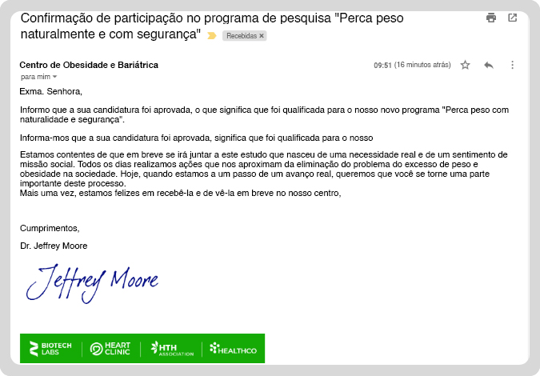
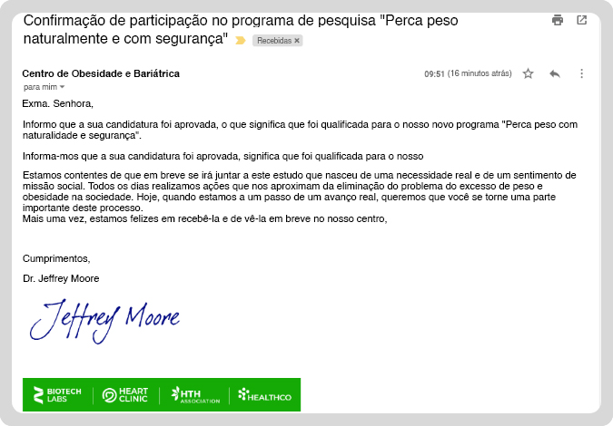
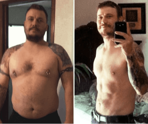

Até há um mês atrás, ela não se conseguia ver ao espelho. Hoje pesa 26 kg a menos e veste um fato de banho sem hesitar

Há dois meses, a vida de Madalena, de 41 anos, da Lisboa, era um pesadelo. Ela foi despedida do emprego e o seu marido saiu de casa. Os mais de 25 quilos de excesso de peso estavam ter o seu preço - ela tinha problemas em mover-se, falta de ar constante e problemas em dormir. Tinha vergonha do seu próprio corpo. Quando ela teve a oportunidade de participar na pesquisa deste produto, a sua vida mudou drasticamente. Já não tem vestígios de excesso de peso e agora ela sente-se atraente e feminina novamente.
Anos de humilhação e ridículo
Falar com a Madalena não é fácil. Ela mesma é relutantemente em falar sobre as suas experiências anteriores:
Desde criança, que tinha tendência a engordar. Na escola, chamavam-me de "barril" e apontavam o dedo para mim. Eu não tinha amigos, porque todos tinham vergonha de aparecer comigo. Quando cresci, comecei a olhar horrorizada para o espelho. Odiava as minhas coxas a roçarem uma na outra, tinha queixo duplo e, acima de tudo, as dobras de gordura que saiam de minhas calças e das blusas. Quando fui à faculdade, tinha a impressão de que todos estavam sempre a olhar para mim e a falar pelas minhas costas sobre o meu peso. Enfim, já ouvi mais de uma vez: Ali vai a gorda! A mesma coisa nos restaurantes: é tão gorda e está sempre a comer!

Tudo isto deprimiu-me muito. O meu corpo recusou-se a obedecer mais e mais. Cheguei a um ponto em que comecei a ter sérios problemas nas costas e não conseguia trabalhar normalmente. Infelizmente, trabalhava na maior parte do tempo em frente a um computador - era contabilista. Posteriormente, o meu chefe despediu-me, porque eu não era eficiente.
O meu marido estava-me sempre a dizer, que tudo ia correr bem, de qualquer maneira. Todos os dias ele me reafirmava do seu amor, embora eu pudesse ver a relutância no seu olhar. Eu via quando, olhava para o meu grande rabo e dois presuntos em vez de pernas. Mas aqui também tudo se desmoronou, porque um dia... ele deixou-me, eu sabia perfeitamente que a causa era eu e o meu excesso de peso. Eu via-o a afastar-se de mim aos poucos, durante um longo tempo. Eu senti-me muito infeliz.
"O efeito ioiô? Isso acontecia todas as vezes"
Muitas vezes, a Madalena recuperava de cada uma das severas derrotas, para continuar a lutar pela sua saúde e felicidade. Mas infelizmente, sem sucesso.
13 kg 4 meses depois perdeu + 27 kg
Já tentou lutar contra o excesso de peso? Vezes incontáveis. Lembro-me de uma dieta de 1000 calorias, em jejum, comia apenas cenouras, o dia todo. No final, eu estava-me prejudicar com essas pseudo-dietas. Hoje eu sei, que assim estava-me a destruir e a destruir o meu corpo. Eu também tinha um treinador pessoal, mas comecei-me a sentir muito mal depois de fazer exercícios - não tinha forças nem para sair da cama. Eu realmente tentei, e sempre, enfatizo - sempre - era o maldito ioiô. E tudo o que eu perdia voltava... e mais! Voltava e ainda por cima com mais!
"O dia que mudou a minha vida"
Perguntámos à Madalena, como é que há 6 semanas ela pesava 103 kg e hoje vemos uma mulher magra, sorridente e completamente desprovida de complexos. Aqui está o que ela respondeu.
Provavelmente, ainda não me conseguiria ver ao espelho, se não fosse a informação que um amigo meu farmacêutico me deu. Aconteceu, que no centro médico onde estav a ser seguida, estavam a decorrer ensaios clínicos inovadores, conduzidos sob a liderança de um conhecido especialista, Dr. Jeffrey Moore. Pelo que descobri, este foi o primeiro estudo deste tipo para pessoas com excesso de peso na minha região. Aí pensei: esta é a minha oportunidade!
Decidi-me inscrever. Esperei a semana toda por uma resposta até que finalmente chegou:
 

Não sei porquê, mas senti que desta vez teria sucesso, que seria diferente. Já tinha ouvido muitas coisas boas sobre o Dr. Moore e sobre o novo método de combate ao peso excessivo, no qual ele estava a trabalhar. Eu queria realmente mudar a minha vida. Em primeiro lugar, perder peso e sentir-me bem comigo mesma. Queria saber se conseguiria usar tamanho M e se ainda me poderia apaixonar por um homem.
"Emagrecia de dia para dia"
Quando questionada sobre o estudo do Dr. Jeffrey Moore, a Madalena não conseguiu conter as suas emoções.
Durante o estudo, fomos divididos em dois grupos - alguns deveriam usar este novo método todos os dias, e a outra parte - tomava um placebo. Eu estava no primeiro grupo. Foi incrível, depois de 3-4 dias, notei as primeiras mudanças no meu corpo. Os centímetros começaram a diminuir, tanto na cintura quanto nas ancas. A celulite desapareceu. Dia a dia, sentia-me cada vez mais leve - o que me deixava muito feliz - deixei de pensar o tempo todo, no que tinha no frigorífico. E devo admitir, este era o meu maior problema. É inacreditável, mas quase não senti fome entre as refeições principais! Isto nunca tinha acontecido comigo antes. Eu sentia-me cheia por um longo tempo, após o pequeno almoço, almoço e jantar. Eu estava a perder peso de forma intensa, praticamente sem fazer nada!
Enfim, nessas 8 semanas perdi... 26 kg! O meu corpo estava irreconhecível. Chega de evitar o meu próprio reflexo no espelho. Chega de vergonha à frente das pessoas. Chega de esconder o meu corpo debaixo de roupas largas. Finalmente, posso apanhar sol em fato de banho e sem constrangimentos, pensei eu então.
Como é que a Madelena passou por esta transformação tão incrível em apenas 8 semanas?
O método que permitiu a Madalena queimar quase 100% do excesso de gordura em tão pouco tempo foi a ingestão de gotas corporais inovadoras que funcionam 24 horas por dia.

Libera moléculas de ácido hidroxicítrico, forçando o organismo a queimar gordura e glucose.
Libera antioxidantes que limpam o sangue do colesterol e de toxinas.
Fornece inibidores que retardam a absorção de açúcar e inibem o sentimento da fome.
Estimula a secreção pela tireoide de hormônios que controlam o metabolismo, acelerando três vezes o metabolismo da gordura.
O seu funcionamento é explicado pelo criador deste método inovador de emagrecimento, o especialista internacional em obesitologia, Dr. Jeffrey Moore:
“A acção das gotas destina-se a remover os restantes depósitos de gordura com uma fórmula natural especial. É a única tecnologia disponível entre os métodos naturais de perda de peso. Em 12 horas, são libertadas substâncias no corpo que derretem a gordura, atingindo mesmo as partes mais difíceis e persistentes do corpo, tais como o estômago, as nádegas ou as coxas. Por sua vez, graças ao poderoso efeito destes ingredientes sobre o hipotálamo (o centro cerebral responsável pelos sentimentos de fome e saciedade), somos aliviados dos impulsos para comer e sentirmo-nos mais cheios durante mais tempo após uma refeição. Na minha opinião, esta é uma tecnologia absolutamente revolucionária na luta contra a obesidade."
Efeitos confirmados
O uso dos gotas Fortunella, fez com que a gordura desnecessária acumulada no corpo da Madalena, ao longo dos anos fosse queimada praticamente sem esforço. Por sua vez, o efeito ioiô não apareceu até hoje, o que significa que as células de gordura foram quebradas completamente e permanentemente.

Os estudos clínicos conduzidos pelo Dr. Jeffrey Morre, confirmaram que os gotas Fortunella contibuem para uma perda de peso rápida e eficaz ao derreter a gordura residual durante o dia e a noite. As substâncias altamente concentradas de origem vegetal contidas nos gotas, transformam instantaneamente o seu corpo numa máquina de queima de gordura, além de controlarem o centro da fome e da saciedade, tornando-o imune às tentações alimentares.
Esqueça as dietas e os tratamentos de risco - opte pela perda de peso natural com Fortunella
Quantas vezes se torturou com pseudo-dietas que só pioraram a sua saúde? Quantas vezes já se sentiu resignado quando os quilos voltaram com o dobro da força após o fim da dieta? Quantas vezes já chorou ao ver o seu reflexo no espelho? É hora de parar com isso e começar um novo capítulo da sua vida. Sem gastar muito, sem risco de complicações ou longa convalescença, como nos procedimentos de lipoaspiração. Esta é a sua hora de mudar e de recuperar a sua autoestima.
O Dr. Jeffrey Moore preparou uma campanha promocional especialmente para os nossos leitores. Está à disposição de todos aqueles que decidam mudar o seu corpo e a sua vida atual, com a fórmula Fortunella.
Se quiser efeitos como a heroína do nosso artigo, Madalena, preencha o formulário de encomenda oficial abaixo e receberá um desconto especial. Aconselho-o a fazê-lo rapidamente, pois o número de descontos diários é limitado.
Estou a tomar Fortunella há 2 meses e perdi 17kg. Há muito tempo que não me sentia tão bem.

Esta promoção especial é válida até !
Estou a usar o Fortunella há um mês e estou com menos 17 kg. Faz muito tempo que não me sinto tão bem.
Estou tão feliz por ter encontrado o Fortunella...
Graças a estas gotas, posso finalmente ter uma vida normal! Depois de perder peso, não me canso como antes e não tenho falta de ar
Sinceramente, quase nem reconheço a minha esposa depois dela usar estes gotas, o que fizeram com ela;)
@Bruno mostre sua esposa!
@Daniel aqui está. Claro, que com o consentimento da minha esposa :P
Não sei como poderia viver sem isto. Tantas dietas milagrosas que não eram milagres, tanto dinheiro desperdiçado... um drama
Desde que terminei de emagrecer com estes gotas, há 2 meses, tenho 19 quilos a menos e nenhum efeito ioiô. Eu recomendo para todas as mulheres
Estudo farmácia e falo muito sobre estas gotas, porque elas têm uma composição muito boa e natural com efeitos comprovados. Pode aplicar o máximo possível
E os homens também podem usar?
@Pedro Amigo, depois de 2 meses com estas gotas, eu até tenho contorno dos músculos da minha barriga! Realmente faz maravilhas!
A minha mãe está a perder peso com estes gotas e vejo que ela está com metade do tamanho
Mudei de tamanho XL para o M com Fortunella, funciona
Estas gotas são muito discretas, não descolam e são resistentes à água. Eu colo onde tenho mais gordura e funciona muito bem
Uau, parabéns pela transformação da senhora! Isto é impressionante!
50% de desconto para os nossos leitores
50% de desconto para os nossos leitores
Aproveite hoje as nossas gotas de 50% de DESCONTO sobre Fortunella!
Encomende as nossas gotas de emagrecimento revolucionárias Fortunella com desconto e comece a sua transformação >>>Esta oferta especial é válida até